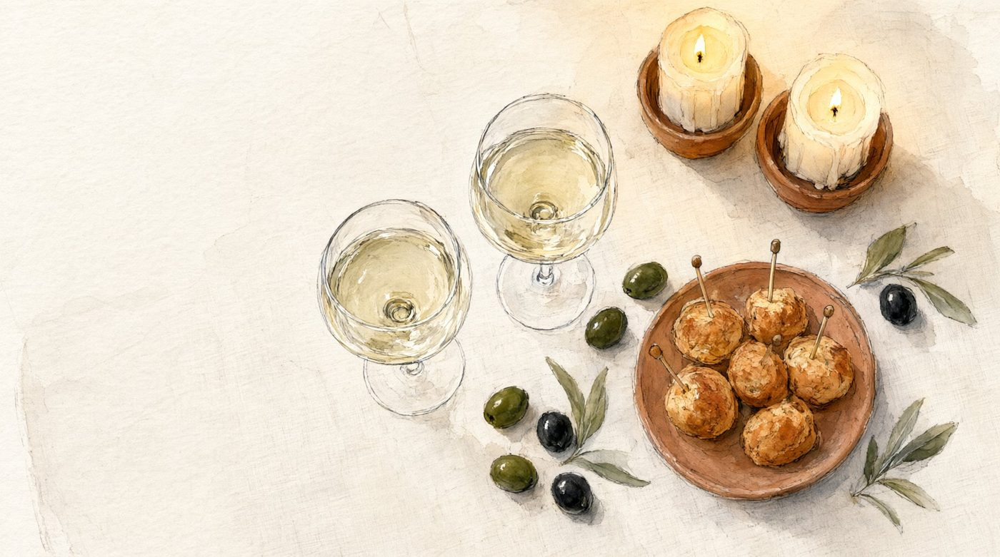
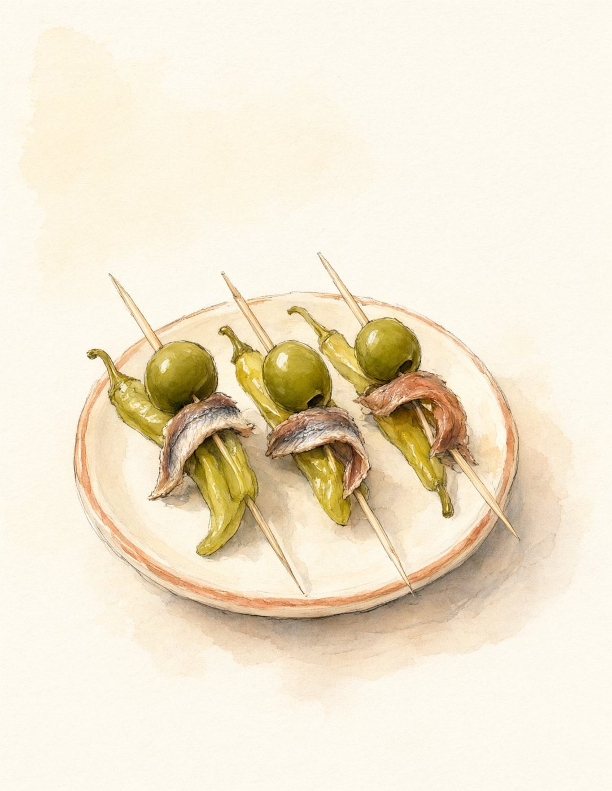
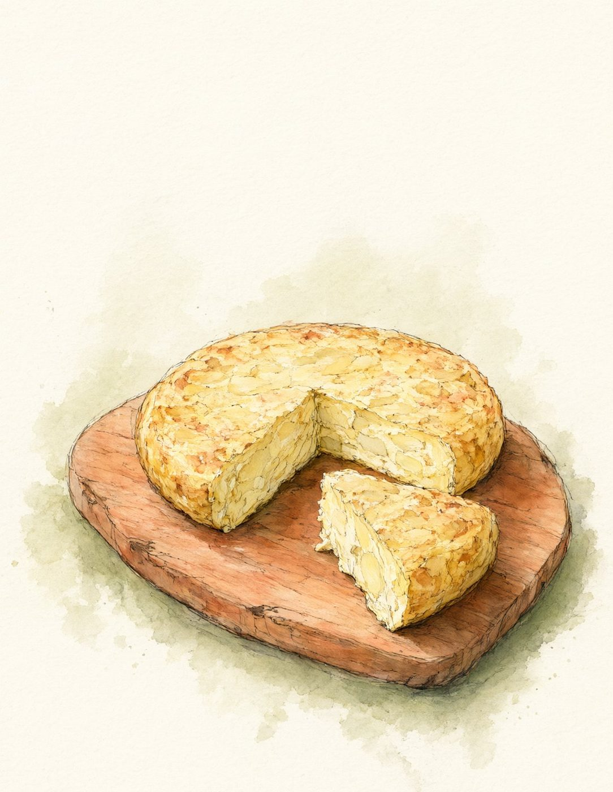
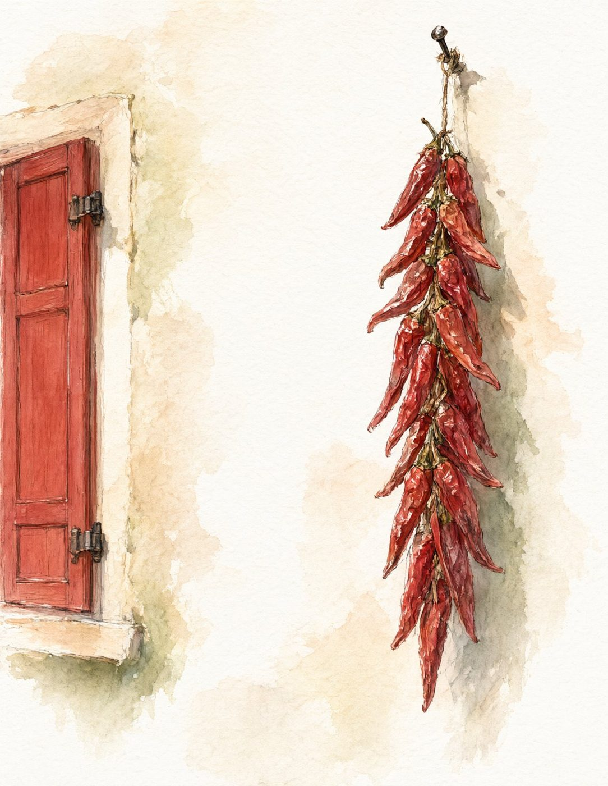
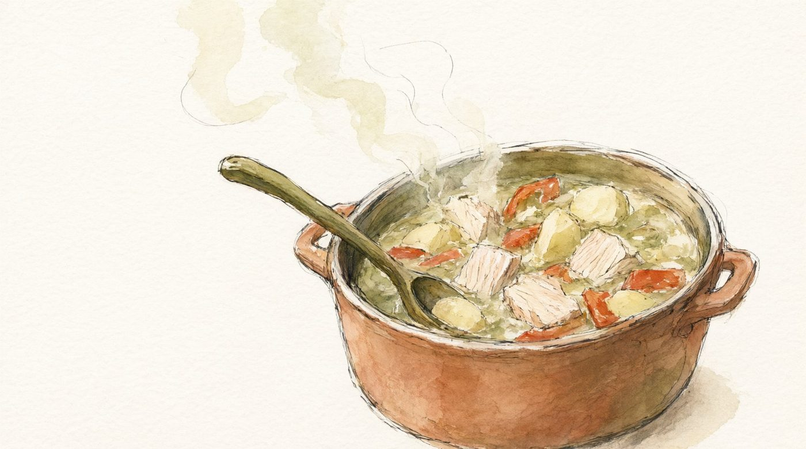
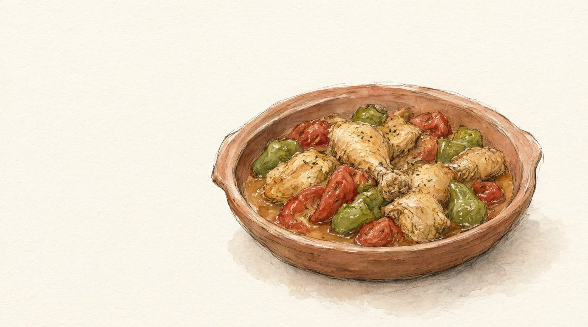
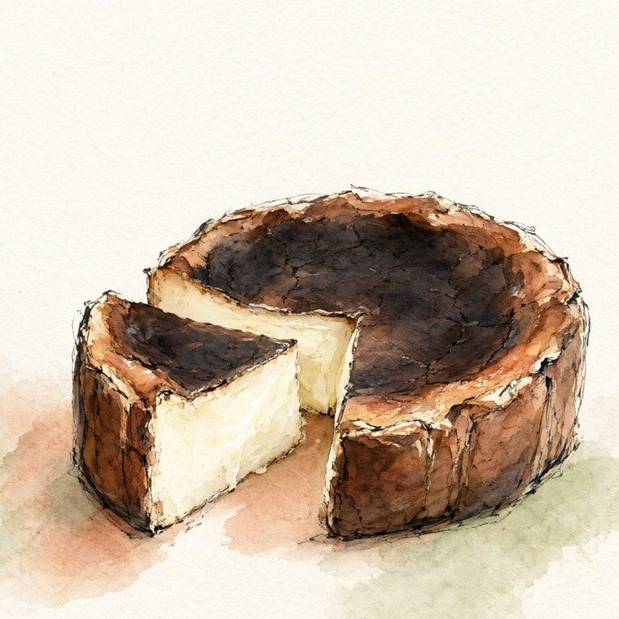
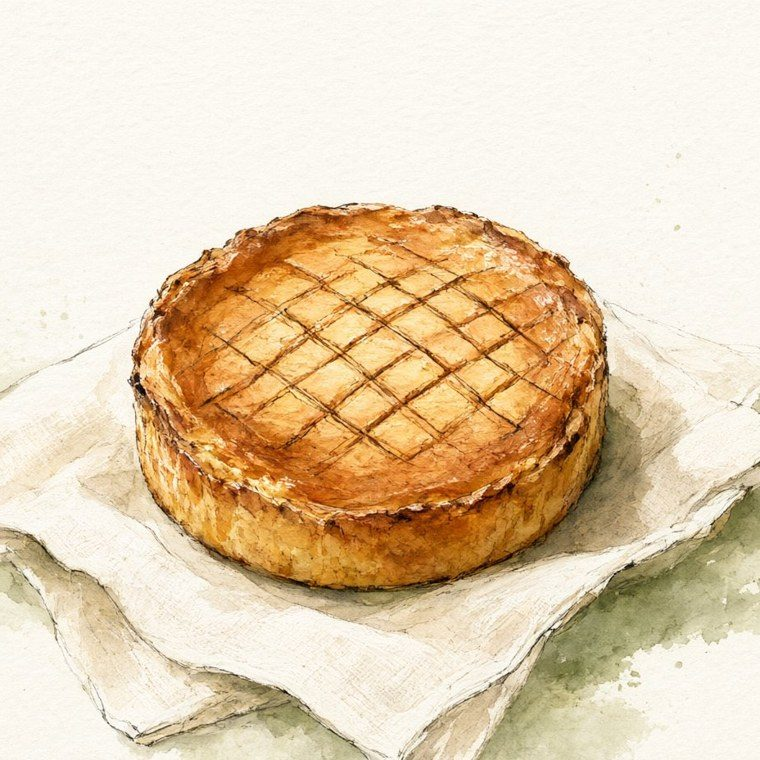

Все темы · Страны
Баскская вечеринка
Вечер как в Сан-Себастьяне: сначала закуски на шпажках «у стойки» и холодное чаколи, потом рыбацкий котёл за общим столом и жжёный чизкейк из маленького семейного бара. Страна Басков лежит по обе стороны Пиренеев, поэтому в меню соседствуют испанский тунец и французский пирог.

Меню по ходу вечера
У стойки
гости только пришли
Гильда
Первый пинчо Сан-Себастьяна, около 1946 года. Есть вариант без рыбы.

Тортилья де патата
Толстый картофельный омлет.

Пиперрада
Перцы, томаты и лук на хрустящем хлебе.
За столом
одно горячее на выбор
Мармитако
Рагу рыбаков из тунца и картофеля.

Курица по-баскски
Курица в той же пиперраде. Для тех, кто не ест рыбу.
Десерт
один на выбор
Жжёный чизкейк
Рецепт бара La Viña в Сан-Себастьяне.

Баскский пирог
С заварным кремом и вишней.
Напитки
к блюдам и без алкоголя- Чаколик закускам, 18+
- Риоха Алавесак горячему, 18+
- Херес Педро Хименеск десерту, 18+
- «Мосто»виноградный сок без алкоголя
18+ Чрезмерное употребление алкоголя вредит вашему здоровью.
Когда устроить
Любой вечер с друзьями. Осенью особенно к месту: в Стране Басков это время перцев и молодого чаколи.
Когда готовить
Чизкейк и пиперрада готовятся накануне. При гостях у плиты около 25 минут: собрать гильды и довести тунец.
Чем занять гостей
- Викторина «Правда или легенда?»
- Четыре баскских слова на вечер
- Счёт по шпажкам в конце вечера
Откройте набор целиком
Онлайн-версия удобна на телефоне и на кухне: все рецепты, план по часам и список покупок. PDF можно распечатать.